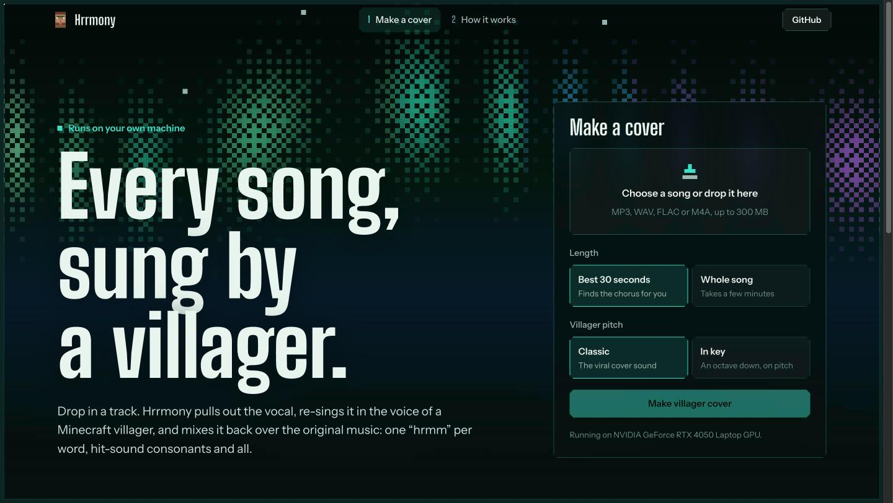

01
Default mode
Hook mode / --hook
Best 30 seconds
Drop in a song and it finds the chorus for you: the loudest stretch whose harmony repeats most,
snapped to a beat. Or pick your own start with --start.
Hrrmony (the villager’s “hrmm” plus harmony) pulls the vocal out of any track, re-sings it in the voice of a Minecraft villager and lays it back over the original music. It runs on your own machine, so your music never leaves it.
The viral villager covers aren’t sound clips glued onto notes. They’re the singer, re-voiced. So the phrasing stays human, every consonant lands like a villager taking a hit, and the song is still the song.
Listen / Public-domain demo
“Happy Birthday”, sung by a Minecraft villager. Made with Hrrmony from a public-domain melody.
Features
One job, done locally: turn a song you love into the villager cover everyone keeps asking for.
Hook mode / --hook
Drop in a song and it finds the chorus for you: the loudest stretch whose harmony repeats most,
snapped to a beat. Or pick your own start with --start.
Full mode / --full
Every verse, every chorus, every ad-lib, re-sung by a villager over the untouched instrumental. A three-minute track takes about a minute on a laptop GPU, and it still works on CPU.
Web app / CLI / Python
A local web app with live progress and side-by-side playback of the cover and the original.
Prefer the terminal? One command does the same, and make_cover() does it from Python.

Measured / not guessed
We took a popular AI villager cover apart: pitch, syllables, noise bursts, EQ and level. Hrrmony reproduces it, and every number is in the repository.
| Measure | Reference | Ours |
|---|---|---|
| Syllables | 50 | 50 |
| One hum per word | 72% | 68% |
| Breath noise | 0.19 | 0.19 |
| Hit-like bursts | yes | yes |
Install / Python 3.10 to 3.12
You need ffmpeg on your machine. The first cover downloads about 1.2 GB of models, then everything runs offline.
pip install "hrrmony[gpu,web] @ git+https://github.com/kenny2077/hrrmony"No NVIDIA GPU? Use [cpu,web] instead.
hrrmony doctorConfirms ffmpeg, your GPU and the model cache.
hrrmony cover song.mp3 # best 30 s
hrrmony cover song.mp3 --full # whole song
hrrmony serve # web appCovers land next to you as MP3 and WAV, with the original excerpt for comparison.